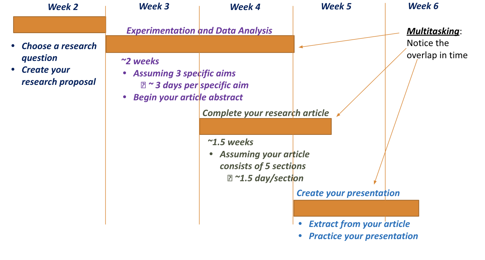

Table of Contents
Introduction
Indigo Intensive Research Seasonal Guide
The IRIS program offers students a unique opportunity to gain research experience in a variety of fields. The program is designed for students who want to explore the limits of what is known. It allows them to collaborate with mentors, share their research, and gain first-hand experience in academia.
For many students, admitted to such a program can make a big difference, especially if full financial support is available. This guide is made to provide potential applicants with information about the program and advice for the challenging application process. If you have a strong interest in science, technology, social sciences or any other field, this guide will be a useful tool for you. It will explain the different steps of the application process, techniques for creating a memorable application, common mistakes to watch out for, and most importantly, how to present yourself as a unique applicant who can make an impact on research.
What is the Indigo Intensive Research Seasonal (IRIS) Program?
2.1. Introduction to the IRIS Program
The Indigo Intensive Research Seasonal (IRIS) Program is an academic research program for high school students aged 14–19 who are enthusiastic about learning about academic research and improving their critical thinking abilities. Students are able to delve deeply into topics throughout the Genetics, AI, Comp Science, Engineering, Entrepreneurship, Economics, Politics & History, or Psychology via the program's connections to renowned mentors from Harvard, Stanford, Columbia, Cornell, and more.
Indigo Research provides a network of mentors and various resources specifically designed for high school students who want to get involved in extracurricular activities. As you take charge of your own exploration fueled by curiosity and motivation, Indigo is set up to give you solid guidance and support. With the help of experienced mentors, you can expect a meaningful and unforgettable learning experience.
Students in the IRIS Program have the opportunity to engage in authentic research projects over the summer and winter terms and complete a publishable research paper in weeks.
2.2. IRIS's Prestige and Importance
The IRIS Program offers students a unique opportunity to build a solid academic portfolio. At the end of the program, many participants will have completed projects that can be included in their college applications or future academic endeavors. Some people may have their research published in scholarly journals, which can give them a competitive advantage when applying to colleges or seeking scholarships.
Many IRIS Program graduates report that their experiences had a significant impact on their academic careers, typically leading them to pursue research or academic-based degrees. The program emphasizes skills like critical thinking, data analysis, and scientific writing, which can be utilized in a variety of academic and professional settings.
Furthermore, the program's research typically addresses practical, real-world concerns. The work done by IRIS students, whether in environmental studies, healthcare advances, or technology advancements, has the potential to effect actual change, supporting the program's goal of developing a new generation of problem solvers.
Why apply to the IRIS Program?
- Complete your publishable research paper in just 6 weeks.
- Join small classes of no more than 9 other students from 30+ countries, 100% online.
- 30+ hours of lessons with top university faculty, plus individualized support from a PhD teaching assistant.
- All programs are eligible for credit from the University of California (UCSB).
- After IRIS, join our Masterclass series on how to use research in your college apps, from our Ivy-grad Indigo executives.
Enhances Your Research Experience: With Indigo by your side, you won’t have to figure everything out on your own as a new researcher. Indigo is thoughtfully created to help enthusiastic students pursue their interests while receiving guidance from mentors. This support transforms a tough journey into an enlightening and rewarding learning experience.
Boosts Your Potential: When you choose Indigo for your research adventure, you can aim for greater heights than you ever imagined. The small group sessions, well-structured mentoring program, and highly skilled mentors will not restrict your exploration. Instead, they will help you stay on track at every important step, from crafting an interesting and credible research topic and thesis to conducting thorough research and producing a well-argued draft and final paper.
Assistance with Publishing: Indigo also offers valuable advice to help you navigate the publishing process as you approach the end of your project.
Also, applying to the IRIS Program is more than just getting research experience; it's about joining a community of people who share your interests and are committed to learning and solving complex challenges. The program gives high school students a unique opportunity to dig into the field of research, frequently resulting in projects that can have a long-term impact in both academic and professional sectors.
IRIS allows students who are passionate about research to accelerate their academic careers. The opportunities for mentorship and networking, as well as access to advanced research tools and methods, make for an invaluable experience. Furthermore, eligible students can receive financial aid to ensure that the program remains accessible to talented individuals from a wide range of socioeconomic situations.
From my experience, I can vouch for the value of online research programs, especially the Indigo Intensive Program. The program not only provided top-notch faculty from prestigious universities, but also a well-structured curriculum that allowed me to delve deeply into research. One thing that stood out was how, despite the program's virtual nature, I felt a strong sense of connection with the faculty and peers. The collaborative and supportive environment fostered by Indigo made the online experience feel personal and engaging. Indigo's emphasis on publication support is a game-changer. Seeing myself actively encouraged to submit work to high-level journals and conferences truly showcased the program's commitment to academic excellence.
The one-on-one mentorship, coupled with a focus on maturity, independence, and critical thinking, has significantly contributed to my growth. College admissions are so competitive these days. The exposure to a broader range of faculty, research options, and the chance to stand out in college admissions make it a valuable experience.
Eligibility and Application Process
3.1. Who Can Apply?
If you are a high school student from 14-19 years old, you can apply to the program; you’re your own money, but if you are aiming for full financial need, you will have certain conditions. Firstly, the IRIS accepts eight students from all over the world each year with full financial needs, and they can attend any IRIS course. The other way is getting accepted from the NYAS-IRIS partnership, which I was selected from this year from 16 students all over the world with full financial aid also. The competition pool is so hard in either way, but I will explain my whole application process through the partnership.
3.2. Application Component Overview
When applying to the Indigo Intensive Research Seasonal (IRIS) Program, your goal is to showcase both your academic capabilities and your passion for research. Also, I would recommend answering the questions thoughtfully. Here are the sample questions I had while applying:
- What would you change to improve the world related to your IRIS topic? Why and how would you change/improve it?
- What is your proudest academic achievement? What are the skills you used to accomplish it?
- Do you have prior research experience? If so, please list any research projects, experiences, internships, etc.
- How would this scholarship benefit you? Please provide details of any financial hardship your family has experienced, if applicable.
- Is there anything else you'd like to tell us before submitting your NYAS-IRIS scholarship application?
3.3. How to Build a Strong Application
For the first question, you should showcase your enthusiasm for a particular issue within your chosen field. Focus on the creative solutions you can come up with, not just the problem at hand. Utilize evidence-based justification to demonstrate the practical strategies for enhancement. Demonstrate curiosity and critical thinking, as they are important qualities valued by the program.
For the second one, choose an achievement that showcases not just your smarts and academics but also your perseverance and problem-solving skills. Describe the particular abilities (such as time management, research, teamwork, and analytical thinking) you employed and explain how they qualify you for the IRIS Program. Avoid the cliché sentences.
For the second third, if you have previous research experience, describe how it has equipped you for more advanced research. Even if you lack professional experience, highlight self-learning, academic assignments, or related extracurricular activities that demonstrate research or analytical skills.
Fourth one, tell the truth about your financial status. Describe how this opportunity could allow you to achieve your educational aspirations in ways that would not be possible otherwise, and how the program will have a lasting impact on your schooling.
Last one, it is your opportunity now to provide any additional details that demonstrate why you are an ideal match for the program. This question is optional but I advise you to answer it and don’t leave it blank. Share a distinctive aspect of yourself, such as your enthusiasm for interdisciplinary studies, your ability to lead, or personal stories showcasing your dedication to research.
3.4. Standing Out in the Application Pool
The IRIS Program is competitive, so it’s important to make your application stand out. Here are some of the tips I used:
- Choose a Unique Research Focus: Write about the world change you want to see using a topic that matches IRIS's research themes and is unique to you. Admissions officers seek applicants who have unique ideas; therefore, do not hesitate to think boldly or unconventionally.
- Show Motivation: The ability to take advantage of any opportunity is a crucial trait for a strong candidate. If you have conducted personal research, started a club at school, or worked on a project beyond the classroom, make sure to talk about these experiences. Demonstrate self-motivation and initiative in areas that spark your curiosity.
- Keep Growing: IRIS and similar programs seek applicants who are eager to develop and enhance their skills. Give examples of times when you encountered difficulties but persevered and learned from them. Demonstrate how you utilized resilience to overcome challenges, whether it was a complex research topic or an unexpected obstacle in a project.
- Tell Your Story: Make sure that your application is coherent. Combine your individual passions, scholastic achievements, and research background to create a unique story for yourself and demonstrate how the IRIS Program will assist you in achieving your future objectives.
- Describe the Program's Impact: Admissions officers are interested in understanding how this opportunity will positively impact you in the future. Write about how participating in the IRIS program will help you achieve your future goals, and explain why this program is the next step in your academic and professional journey, whether you plan to continue research in college or apply the skills to help your community.
My golden tip is to understand the program’s mission, read the website well, and make sure that you understand every word. Another tip is to focus on showing your passion for research. IRIS and similar programs evaluate qualities beyond academic performance. They also want to see you as a person, your life beyond academics. It is important to highlight any past experiences in writing, presentations, or working in teams.
Life as an IRIS Scholar
As a scholar in IRIS, you will have in the first half of Week 6= 4 weeks
- IRIS class time: 6 hours (T/Th)
Your Calendar will be:
- IRIS Focus Days: 4-5 hours of steady work, one day per week
- IRIS Homework Days: 1-2 hours of work, 3 days per week
- IRIS Writing Hour: 45-60 min of writing, 3 days per week
Be careful to realistically factor in other activities, taking breaks, holidays and events.
Week 1: Introduction
- Familiar with our IRIS cohort and values
- Aware of a broad range of engineering challenges
- Starting to form an idea of your topic preferences
- Understand the need for a systematic approach
- Begin building your toolbox of engineering design methods
- Explain and interpret qualitative and/or quantitative examples
Week 2: Research Foundations
- Understanding the steps of your research project.
- Creating a plan (timeline + strategy) to complete your research project.
- Navigating databases & search engines.
- Remembering & synthesizing your findings in an annotated bibliography.
- Differentiating between paper genres: “review paper” vs “emperical paper”.
- Choosing a research question.
Week 3: Diving into Your Project
- Completing your annotated bibliographies.
- Drafting your abstract: your mission statement for the project.
- Discerning which parts of the abstract you will wait to fill in.
- Identifying the parts of a “review paper” versus an “emperical paper.”
- Begin outlining your paper.
- Understanding how the “ingredients of an introduction” work together.
- Begin drafting your introduction.
Week 4: Data Analysis & 1:1 Feedback
- Drafting your introduction.
- Completing your research paper outline.
- Responding productively & positively to your professor’s 1:1 feedback.
- Gaining familiarity with core methods of data collection and analysis in your field.
- Performing secondary data analysis.
- Identifying ways of incorporating secondary data analysis in your paper.
Week 5: Drafting, Editing, Presenting & Publishing 101
- Working alongside your peers, in a collaborative environment, to write.
- Formulating specific questions for your instructors in class, as you’re writing.
- Responding positively to and incorporating impromptu feedback.
- Offering your peers constructive, pragmatic, considerate feedback.
- Contributing to & editing your paper in response to a writer’s workshop.
- Exploring best-practices for academic presentations
- Identifying the first steps towards publishing your paper.
Week 6: Final Drafts, Presentations, Publishing
- Responding constructively & efficiently to comments on your full draft.
- Presenting your project in a clear, confident, and engaging manner.
- Asking thoughtful, well-informed questions about your peers’ projects.
- Completing your research paper.
- Exploring publication venues & understanding the process.
- Making a plan to try and publish your paper.
Helpful Hints: Overlap & Multitasking
Plan to multitask in your project, as in this fictional student’s timeline. Note: this fictional timeline does not match your IRIS schedule!
 >Helpful Hints: Divide Your Goals into Tasks
- Decide how much time you have
- Subdivide your goal into tasks
- Divide total time by number of tasks
Example: make believe you have 6 days complete a research article (the ‘goal’) with 6 sections (‘subtasks’):
- Abstract
- Introduction
- Literature search
- Methods
- Analysis
- Conclusions
Q. How much time per task? Mark these tasks on your Calendar Creation worksheet each week!
Helpful Hints: Reducing Stress & Prioritizing Sleep
- Try not to plan an IRIS Focus Day the day before a major assignment is due…
- Or the day of the deadline!
- Give yourself at least 24 hours between your IRIS Focus Day and the deadline.
- Avoid leaving a lot of writing until the last minute.
Prioritize sleep throughout this program.
- Avoid planning your IRIS writing hour for a time that will cut into your sleep schedule.
- If and when you fall behind on your project:
- Plan instead of panicking.
- Add another IRIS Focus Day to that week and to the next week.
My Story and Testimonial
From my personal experience, Indigo is definitely a program that not only allows high school students to excel academically but also allows them to connect with students from around the world and professors who have a deep history with the subject concentration. I first participated in the program this year, in the concentration of Biomedical Engineering, and was introduced to a rigorous culture of academic and curiosity-engaging excellence that allows each and every student to write an advanced research paper.
Students are matched with professors who have experience in a field of their choice, and we have the opportunity to work with them individually over a period of around 6 weeks. Prior to individual sessions, we collaborate in small cohorts (9 students) of peers with the same interests to build knowledge of the subject and familiarize ourselves with the research process. I learned a lot from each of them, especially the different spectrums they shared during each discussion. Even though it wasn’t my first time writing a research paper, I was given support not only by my professor but also the incredibly strong PhD student community through frequent seminars and office hours that students could optionally participate in. During these office hours, I had the opportunity to learn how to make the most of your research process and how to revise any written parts of my research paper.
As a student, I felt supported by my peers and mentor, and I never felt overwhelmed by the fact that I was writing a full research paper at the age of 17. At its core, Indigo is a program where students are encouraged to push the boundaries of conventional thinking and use a foundation of knowledge that is reinforced through the cohort meetings to investigate topics no one had thought of asking questions about. Whether it is music theory, behavioral economics, or molecular biology, Indigo has experts on every topic and a wealth of resources that allow me to excel not only in the program but in my life after Indigo.
Furthermore, Indigo is a big part of my college application. The program is very well preserved by universities; therefore, having Indigo on your application says a lot about your capability. Ultimately, Indigo has helped me reach my ambitious personal goal by making me expect more of myself than ever before; it helped me solidify my passion, and it will prepare me for life at university.
I'll say my professor was from the University of Bristol and was always available. Once we clicked off the meeting, the connection did not end. I was able to reach out to him whenever I needed, and he was forthcoming with advice or pointers about my drafts in between meetings. Overall, I would say the mentorship was a central piece of the experience and definitely my favorite part of the program. Needless to say, I will definitely be participating in it again next year!
Indigo Intensive Research Seasonal Guide When my friends are considering any of those research programs, I always tell them to look for three things (in the order of importance):
- Mentor quality: Professor or PhD students? The benefit of mentorship from actual faculty is obvious. They have more experience, they love teaching, they offer better guidance, and they know the system, etc. Plus, getting a favorable letter of recommendation from a professor can be a highlight in your college application. You won’t get the same experience when working with a PhD student as a mentor. With tuition, some programs may not be worth it.
- University: If you can attend a program taught by a professor from your dream school, that is of course the best option. But more importantly, the course should be in your area of interest and demonstrate your academic capability to work on independent research. But if your chosen college is not available, you should go for the best university's faculty in general.
Indigo Intensive Research Seasonal Guide 6. Common mistakes to avoid 6.1 Missteps in the Application Process
- Rushing the Application: Completing the application at the last minute often leads to careless errors, a lack of depth and details in answers, and missed opportunities to demonstrate your strengths.
- Ignoring Instructions: Each section of the application typically has specific guidelines, and overlooking any details can hurt your chances.
- Failing to Proofread: Spelling or grammatical errors reflect poorly on your attention to detail. Always proofread your application or ask someone else to review it.
- Providing Incomplete Information: Leaving sections of the application blank or providing insufficient answers can suggest a lack of seriousness or preparedness.
Common Mistakes to Avoid
6.1 Missteps in the Application Process
Rushing the Application: Completing the application at the last minute often leads to careless errors, a lack of depth and details in answers, and missed opportunities to demonstrate your strengths.
Ignoring Instructions: Each section of the application typically has specific guidelines, and overlooking any details can hurt your chances. Ensure you follow all formatting rules and character limits, and provide the necessary documents with an appropriate name. Don’t write the minimum number of words, but try to be close to the maximum limit without writing irrelevant information.
Failing to Proofread: Spelling or grammatical errors reflect poorly on your attention to detail. Always proofread your application or ask someone else to review it, and don’t use AI tools.
Providing Incomplete Information: Leaving sections of the application blank or providing insufficient answers can suggest a lack of seriousness or preparedness. Each question is an opportunity to showcase who you are, so take your time to craft thorough and thoughtful responses.
6.2 Underestimating the Importance of Research Interests
One of the most important aspects of the IRIS application is demonstrating your passion for research. Many students mistakenly underplay the importance of showcasing their interests in specific research fields. When you apply:
- Be Specific: Vague answers like "I love science" are insufficient. The tip here is to “show, don’t tell." Highlight specific areas of research that fascinate you, explain why, and explain how you’ve pursued those interests in or outside of school. If you're passionate about climate change or biomedical research, dive deep into why these matters.
- Choose the suitable IRIS Track: The program offers a range of research fields, or "tracks." Aligning your interests with those provided by IRIS, choose a good fit between your academic aspirations and the program’s goals.
6.3 Avoiding Generic Statements in Your Application
Using generic statements or clichés in your essays is a common mistake among all applicants. The admissions officer reads thousands of applications, so it's crucial to stand out with your unique experiences and ideas. Be in the reader's mind always. This will be achieved by creating your own story, unique experiences, and emotional mark. Avoid the following:
- Cliché Statements: Phrases like "I want to change the world" or "I have always loved science" are overused. Instead, provide concrete examples of how your research interest has shaped your academic or extracurricular experiences, how you will change the world, and why you like science.
- Lack of Personal Insight: Your essays should not just summarize showing achievements. Instead, delve deeper into what drives your passion for research. Share stories, specific challenges you've overcome, or personal moments that inspired you. They want to know who you are.
Next Steps: Life After IRIS
Finishing the IRIS program is just the start of your adventure. The abilities, backgrounds, and networks you acquire will unlock doors to potential academic and career prospects like:
7.1 Taking Advantage of Your IRIS Experience for College Applications
The college selection process becomes more and more competitive each year. Doing a research internship or program shows that you are someone with interests, an initiative to pursue those interests, ambition, and an eagerness to learn. You also show that you’ve been able to work in a professional environment early on, along with other expert researchers. One of the most important pros though is that doing research offers ample opportunities to write about an important experience in your college applications.
- Discuss your research work in your personal statement or supplemental essays. Emphasize the challenges you faced, the discoveries you made, and how the program shaped your academic goals.
- Showcase Problem-Solving Skills: Highlight specific examples where you applied creative thinking or critical analysis in your projects.
- Reference Mentorship: Describe the guidance you received from mentors, as well as how it influenced your approach to learning and research. This shows your ability to collaborate with professionals and learn from experienced individuals.
7.2 Continuing Research After the Program
Indigo provides high school students with a comprehensive roadmap and mentoring structure, ensuring you have every opportunity to turn your dedication, effort, and perseverance into meaningful long-term outcomes.
- Learn the fundamentals that underpin college success, including key theoretical concepts and core ethical and academic principles.
- With your passion at the helm, complete your journey more intellectually excited, confident, and curious than ever before.
- Boost your college admissions profile with distinctive honors and accomplishments.
- Experience a new network of engaged scholars—both like-minded peers and seasoned academic scholars.
- If you're interested, attend a real academic conference where you can present your research in the company of other inspiring young scholars while enjoying additional mentoring and networking perks.
- NEW: Earn 2 college credits from UC Santa Barbara for your efforts! Credits are generally transferable to a wide range of universities.
7.3 Staying Connected with the IRIS Community
The IRIS Program has a strong sense of community among its scholars, mentors, and alumni. This is the thing I love, and you should focus on it also. To stay connected:
- Join the Alumni Network: Many programs, such as IRIS, offer alumni networks where former scholars can stay in touch, share opportunities, and collaborate on future projects. Participate in these networks to maintain professional relationships.
- Attend conferences and seminars: IRIS alumni often receive invitations to attend conferences, seminars, and other educational events. Use these opportunities to expand your knowledge and network.
- Stay in Touch with Mentors: Don’t lose contact with your mentors after the program ends. Keep them updated on your progress, seek their advice on new research opportunities, and maintain the professional relationship you've built because it’s a treasure.
Final Thoughts and Tips
If you are a self-motivated individual excited about crafting your own research proposal and learning fundamental research skills, a publishable research paper could be a beneficial extracurricular project for adding distinction to your college apps. Your accomplishments should also open up additional opportunities in college, making this kind of extracurricular something to seriously consider.
Keep in mind that there may be some scheduled activities for new students, as well as fully flexible scheduling options, so it's always wise to communicate with Indigo early on about any interests you may have.
If you want the freedom to explore and choose your own research field and topic, along with 1:1 mentoring from graduate students, PhDs, postdoctoral researchers, and professors, as well as support for publishing your research in academic journals, Indigo provides all of these in one place.
One of the main benefits of teaming up with Indigo, as opposed to going into research alone, is the significantly higher chances of achieving success. In the end, developing research that can be published will require the cultivation and application of skills that most young scholars only learn in college over the course of one year or more!
Choosing to pursue fulfillment and success with Indigo is a more effective strategy than going alone, as solo endeavors raise the risk of veering off track and becoming lost in confusion and frustration.
Best wishes, and good luck!